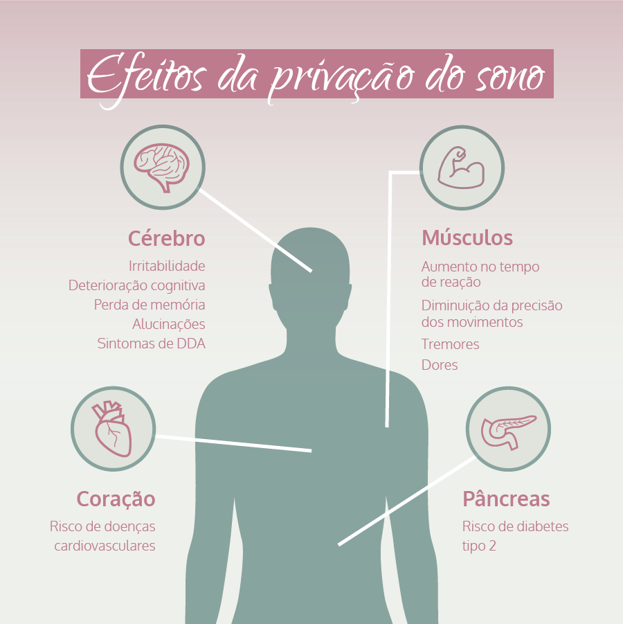

<!DOCTYPE html>
<html lang="pt-Br">

</html>

<head>
    <link rel="stylesheet" href="style.css">
    <meta charset="UFT-8">
    <title>como ter uma boa noite de sono? </title>    
</head>

<body bgcolor="#40E0D0">
<p>
    Veja a seguir 5 dicas que podem te ajudar a ter uma boa noite de sono e evitar a insônia:<p>
    1)Faça atividades físicas.<p>
    2)Evite usar celular e aparelhos eletrônicos antes de dormir.<p>
    3)Coma alimentos leves a noite.<p>
    4)Use o travesseiro ideal.<p>
    5)Evite telas e luzes. Evitar luzes é muito importante para que o corpo entenda que é hora de descansar.<p>
    6)Prepare o ambiente.<p>
    7)Evite a ingestão de líquidos perto da hora de dormir.<p>
    8)Pratique um esporte.<p>
    9)Evite distrações antes de dormir.<p>
    
</body>

</html>